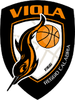
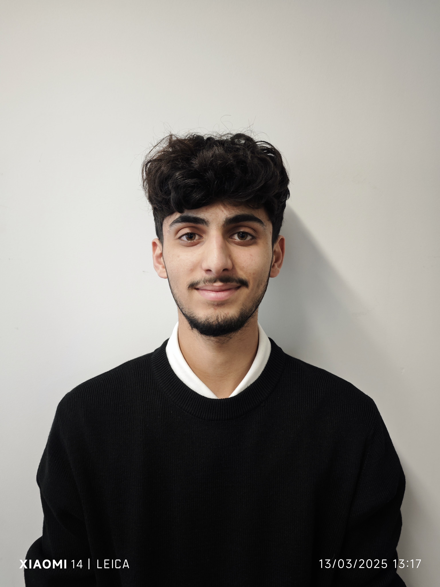
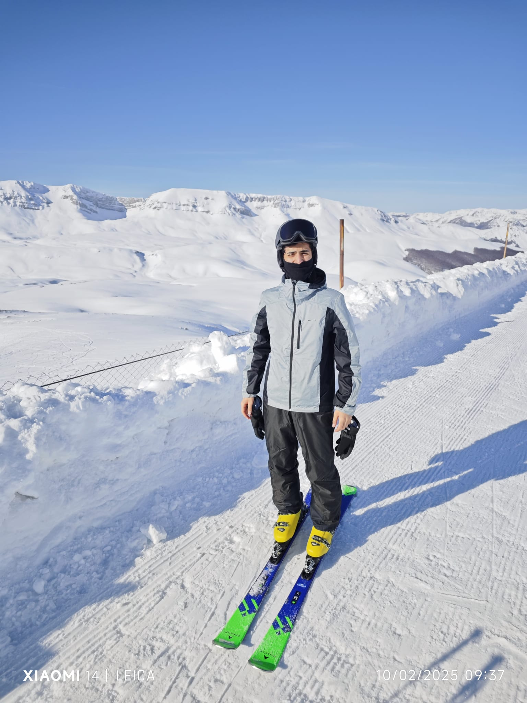

Certifications
Obtention des certifications Cisco :
- CCNA 1
- CCNA 2

Actuellement en alternance au sein d’une entreprise située à Monaco, je réalise cette expérience dans le cadre de ma deuxième année de BUT2 et je développe chaque jour mes compétences professionnelles en les appliquant à des projets concrets.
Je suis également étudiant en deuxième année de BUT, formation au cours de laquelle j’ai pu acquérir et renforcer de nombreuses compétences. Les différents projets réalisés m’ont permis de mettre en pratique mes connaissances, mais aussi de les approfondir et de gagner en autonomie.
Auparavant, j’ai obtenu un baccalauréat américain au sein du CIV, une expérience enrichissante qui m’a apporté une ouverture internationale ainsi qu’une bonne maîtrise de l’anglais.
Obtention des certifications Cisco :
En dehors de mes études et de mon alternance, ces activités m'aident à garder un équilibre et à développer des qualités utiles dans mes projets : esprit d'équipe, concentration, curiosité et persévérance.

